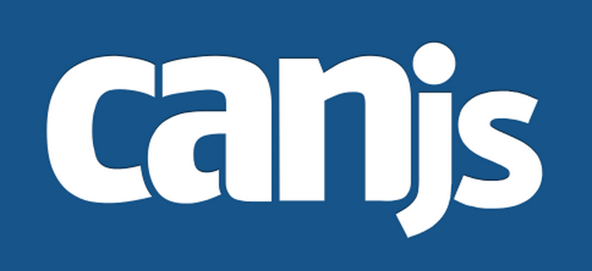
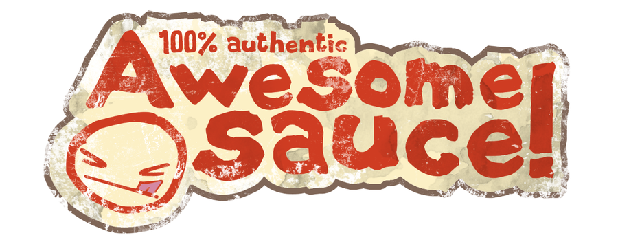

News from the
Bleeding Edge
Browser Pop Quiz
Last version check — February 2015:
Browser Pop Quiz
As of March 25, 2015:
Chrome Highlights
Version 41 (beta)
- Phasing
out support for SHA-1 / 1024-bit SSL certificates

Firefox Highlights

Opera
Expect version 28 after Chrome 41 ships

Safari & IE
Security updates
Holy crap, a new browser! From Microsoft!
Announced Jan 21 – will ship with Windows 10
User features:
- First-class mobile / touch support
- Cortana (voice command) integration
- Web page annotation support

Languages, Frameworks & Tools
Bitovi Open Source Event
Help Bitovi (makers of CanJS, jQuery++, etc.) test the CanJS docs
March 24 or 26, times flexible
A "few hours" of your time, plus get paid!

What is npm?
- A repository of open source projects *
- A CLI package manager
- Bundled with Node.js
Purpose:
Simplify the development of applications and tooling
* Note that there is no specification of "Node.js" or "JavaScript". Npm is everywhere.

Why npm Matters?
- No choice =)
- Ease of use
- DRY, modular code (Unix philosophy)
- Standards - kinda
- Centralized development approach
- Package managers are the center of a development ecosystem
Why npm Matters?
Here are a few stats:

That's nearly 1.2 billion packages downloaded.
Last month.
Where is npm used?
- SSJS (Node.js/io.js)
- UI (jQuery)
- CLI (yeoman, bower, grunt/gulp)
- App deployment (npm install)
- Infrastructure Orchestration
Really? All the things?
Wait, where does Bower fit in?

First-time Setup
Only required if you plan to publish a module
- Create an account at npmjs.com
- Run npm adduser to connect your local config to npmjs.com
- Run npm set to configure your standard package.json fields
Typical Project Lifecycle
- Run npm init to generate package.json
- Develop your module, library, etc.
- Use npm install --save[Dev] to add dependencies
- Write some unit tests and connect to CI (optional, but recommended)
- Update your README, license, etc.
- Update the version in package.json
- Publish with npm publish
- Go to #2
Etiquette
Don't Abuse npm
Workflow
Research → Build → Test → Publish → Announce
Announce? No fear!
Also...
- MochaJS is pretty awesome... just sayin'.
- Learn the CLI shortcuts to save time.
Private Registries
They are real!
It's an evolving ecosystem

Tips 'n' Tricks
npm i mymodule // npm install mymodule
npm i mymodule -S // npm install mymodule --save
npm link // Link to a global module
npm update npm // Upgrade your npm installation
package.json:
"scripts": {
"start": "node --harmony index.js",
"test": "mocha test"
}
CLI:
npm test
npm start
Npm Roadmap Highlights
- Multi-stage installs
- Progress bars
- Automatic dedupe
- Lot's of dependency management options (peer, optional, etc)
- Better shrinkwrap
- More thoughts on use cases outside of the Node.js ecosystem
←
→
/
#